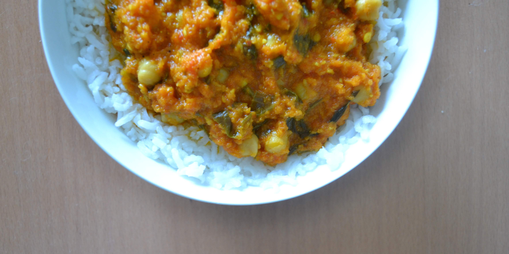

Vegan Korma

Serves 5 (605cal per serving)
Ingredients
- 1 Tbsp Olive Oil 119cal
- 3 Cloves Garlic 18cal
- 1/2 thumb-sized Piece Ginger 2cal
- 2 tins Drained Chickpeas 346cal
- 200g Spinach 38cal
- tsp Salt
- Some Coriander
Sauce
- 1 Red Pepper 30cal
- 1 Yellow Pepper 30cal
- 2 Carrots (pre-boiled 20 mins) 18cal
- 400ml tin Chopped Tomatoes 104cal
- 400ml tin Coconut Milk 652cal
- 3 Tbsp Dessicated Coconut 121cal
- 2 Tbsp Ground Almond 63cal
- 2 Tbsp Maple Syrup 37cal
- 3 Tbsp Curry Powder 7cal
- 1 Tbsp Ground Coriander 14cal
- 1 tsp Garam Masala 15cal
- 1 tsp Ground Cumin 10cal
- 1 tsp Salt
- 1/2 tsp Ground Turmeric 8cal
Preperation
- Chop the Peppers, chillies, carrots and add chopped tomatoes, coconut milk, spices and seasoning and then
blend.
- Heat large saucepan and add olive oil followed by garlic finely chopped.
- Turn down heat and add sauce, spinach and chickpeas.
- Boil 350g of long grain rice.
- Garnish with sliced almond.